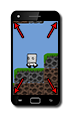

Tutorial
Page 1 of 15
Resolution And Scaling
One of the greatest problems that most users come across when creating cross-platform games is with resolution and scaling. This is especially complicated when working on mobile devices as the resolution
(the number of pixels that a screen contains irrespective of its size) varies greatly depending on the OS, device, and platform being used. Unfortunately there is no fixed way of dealing with this problem, and
the final solution will depend very much on your game, how it's designed, and the platforms you are porting to. However there are general methods that can be adapted for use on all platforms, and those are
what this tutorial aims to show.

Before starting this tutorial it is important that you also understand how GPUs scale graphics, as many times when scaling up or down with views you can get "artefacts" between tiles and backgrounds. This is a
very common problem, and is explained in an article on the YoYo Games Tech Blog here. You should also check the
manual for the entries related to Texture Pages as they contain further information on how to deal with this, and if you are using tilesets, you may find the tool
Tileset Champion of particular use.
Note that this tutorial covers most of the platforms available to you from GameMaker:Studio, starting with Windows, Mac and Ubuntu, then HTML5 and Windows8, and finally iOS, Android, and Windows
Phone, but before skipping to the pages that you think are relevant to your situation, please take the time to do the first few pages dedicated to the Windows platform, as they contain basic concepts and scripts
that are essential to a correct understanding of this tutorial.
Click on the Next button to go to the next page of the tutorial.